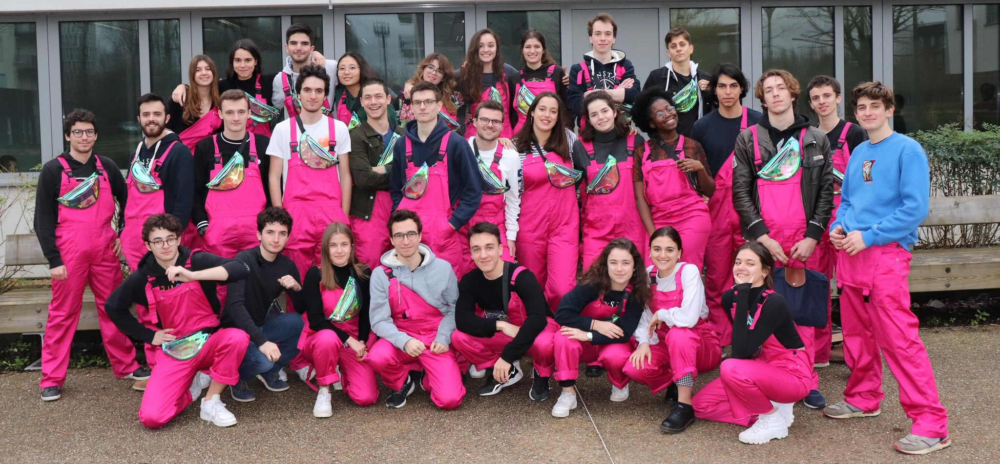
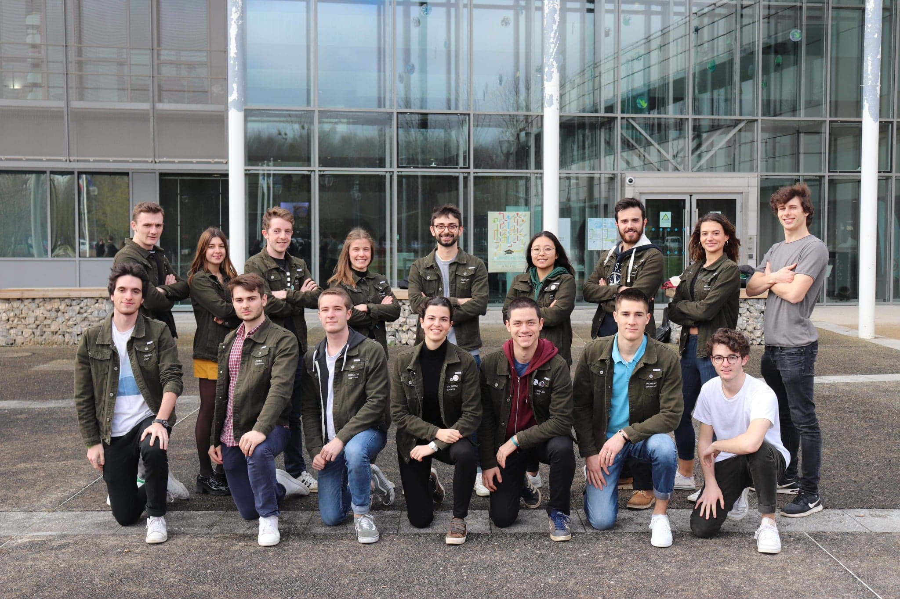

<div id="interestsDiv">
    <section id="articles">

      <h1>Le "BOOM"</h1>
      <article>
        
        <h2>Chairman of the "BOOM" | Board of Student's Association</h2>
        <p>
          After several interviews, I was appointed Chairman of one of the biggest Student Association at ENSTA PARIS.
          <br>
          This required a lot of work during an entire year :
        </p>
        <ul>
          <li>Management of a 40-people team </li>
          <li>Management of a 30,000€ budget </li>
          <li>Organization of three festive events, bringing together 800 people</li>
          <li>Coordination and active monitoring of every aspect of the event: administrative, logistic, financial,
            security, communication...</li>
          <li>Crisis management during covid-19 pandemic</li>
        </ul>

      </article>

      <h1>Student Sport Department</h1>
      <article>
        
        <h2>Community Manager | Student Sport Department</h2>
        <p>
          After going through a selective electoral process for the Student Sport Department, I was appointed
          Community Manager in the Student Sport Department of ENSTA Paris, which monitors everything related to sport
          in the school.
          <br>
          Troughout the year, I was responsible of sharing Sport Department-related information on a daily basis on social media to all students
        </p>


      </article>
    </section>
  </div>